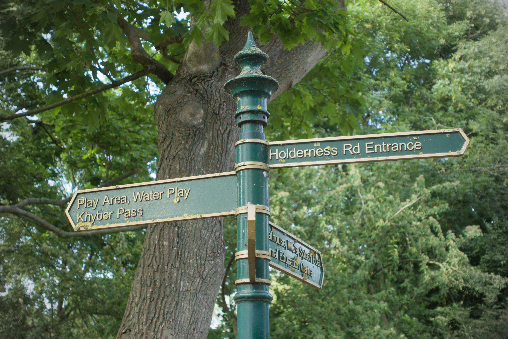

Global Game Jam 2026
This is my game jam entry for Global Game Jam 2026.


This is the second game jam I have ever entered. Three Thing Game 2025 was the first. However, this is the first time I ever worked on a game jam entry fully by myself which was quite a pain to make. I used unity for making the game and I designed the UI/art of the game, the rest of the assets were gotten through the The theme for GGJ2026 was "Masks" So I decided to make my game similar to ace attorney with mix of noir elements. Since I only had a week to make this game I decided to split the following days for each part of the game. I spent the earlier most of my time getting the concept, tone and lore of the game done in a word doc. I knew I wanted to write a whodunnit story but in a masquerade ball, where you play as a detective trying to unmask the criminal organization known as the silver masks. This did help when writing the unique dialogue for each NPCs and what items you present to them. For example, the silver masks are an anarchist group that a lot of the lower class enjoy since they try and fight for them (even if their actions are criminal) depending on who you show the silver mask item. The NPC will react more favouribly towards them or not and sometimes they reveal something more about the character. It took a while however, to get the dialogue system to work since it needed to track what item you presented to NPC and have it triggering the final state where talking to the witnesses triggers the endings. There are a total of three endings for each NPC. There was a lot of content that was cut from the demo such as having an intro scene playing where you walk on the streets and then you go to the masquerade ball. Or having more lines for detective similar to max payne. All in all I think it was quite fun and I think I managed to achieve most of the things I wanted to do even in the limited time frame of a week.